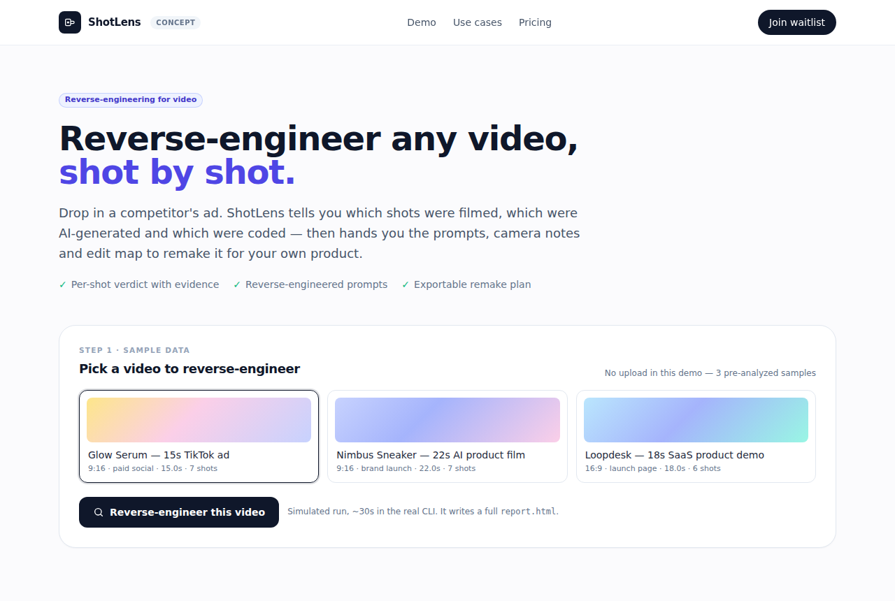

rea-video: Reverse-engineer any video, shot by shot
JuneYaooo/rea-video · Media & creativeApache-2.0⭐ 1,928

What it is: JuneYaooo/rea-video is a CLI tool built for AI agents (Claude Code, Codex, etc.) that reverse-engineers any video, shot by shot. It tells you which shots were filmed, which were AI-generated, and which were coded. It also describes how the captions, cuts, stickers, and audio were made, and gives you a plan to remake it yourself. Per the README, it handles talking-head, tabletop, AI video, avatar, 3D/animation, code/template, screen recording, and mixed edits.
Why it's taking off: It turns a vague "how did they make this ad?" into a structured report with per-shot frames, evidence, reverse-engineered prompts, camera and lighting notes, and an audio breakdown (voice, music BPM, sound effects). The output is a single report.html plus a one-line summary. Growth has been fast (about 1,230 stars/day), likely because it hits a real pain for anyone trying to reverse-engineer viral short videos for ads or content.
Where the product opportunity is: The CLI is powerful but has a learning curve. A web app where you upload a video and get a ready-to-use shot list, prompts, and a remake checklist (with SRT/ASS export and maybe Remotion project scaffolding) would be much easier to adopt. The core is an agent workflow, so the productization barrier is moderate. The target users are short-video ad buyers, content marketing teams, and small agencies who want to clone what works. The main risks are dependency on external video models (Gemini/Doubao for cost and availability), Chinese-first docs, and the README's own note that about 35% of live footage is misclassified as AI.
Today's top 5
| # | Repo | Buzz | Startup | Overall |
|---|---|---|---|---|
| 1 | JuneYaooo/rea-video | 8.67 | 7.95 | 8.3 |
| 2 | pbakaus/impeccable | 8.0 | 7.4 | 7.93 |
| 3 | D4Vinci/Scrapling | 7.0 | 7.7 | 7.61 |
| 4 | seedds/nxnative | 8.67 | 6.4 | 7.08 |
| 5 | Verlintas/NOIR | 7.33 | 6.8 | 7.01 |